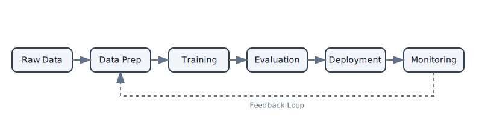
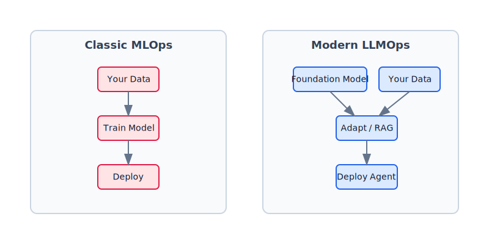
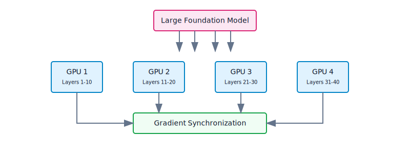
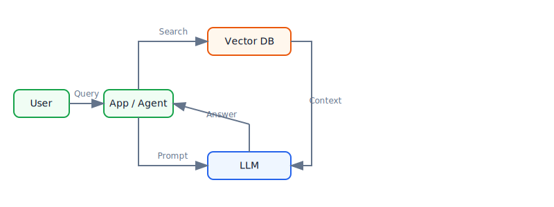
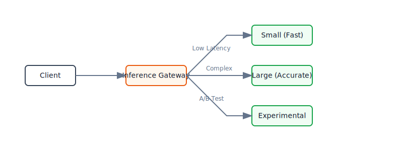
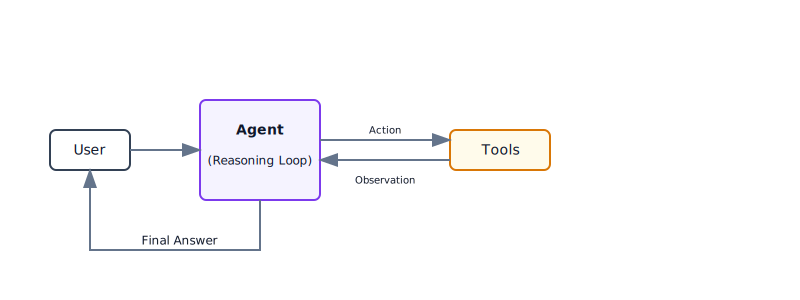

MLOps in the Age of Foundation Models. Evolving Infrastructure for LLMs and Beyond
The field of machine learning has undergone a seismic shift with the rise of large-scale foundation models. From giant language models like GPT-4 to image diffusion models like Stable Diffusion, these powerful models have fundamentally changed how we build and operate ML systems.
In this post, I'll explore how ML infrastructure and MLOps practices have evolved to support foundation models. We'll contrast the "classic" era of MLOps with modern paradigms, examine what's changed, and look at the new patterns and workflows that have emerged. Think of it as upgrading from a standard toolbox to a fully automated factory—the principles are similar, but the scale and complexity are on a different level.
1. The MLOps Landscape a Few Years Ago (Pre-Foundation Model Era)
A few years back, MLOps primarily meant applying DevOps principles to machine learning. The goal was simple: automate the model lifecycle from data preparation to deployment and monitoring.
Back then, ML systems were built around relatively smaller models, often trained from scratch on domain-specific data. Here's what the "classic" MLOps era looked like:

1.1. End-to-End Pipelines
Teams built end-to-end pipelines for data extraction, training, validation, and deployment. Apache Airflow orchestrated ETL and training workflows, while CI/CD systems ran automated tests and pushed models to production. The focus was on reproducibility and automation: package models in Docker containers, deploy them as REST microservices or batch jobs, and keep everything running smoothly.
1.2. Experiment Tracking and Model Versioning
Managing experiments and versions was critical. Platforms like MLflow and Weights & Biases (W&B) became popular for logging training runs, hyperparameters, and metrics. Data scientists could compare experiments and reliably reproduce results. Models were registered in model registries with version numbers, making rollbacks straightforward when a new model underperformed.
1.3. Continuous Training & CI/CD
Classic MLOps pipelines emphasized continuous integration of new data and models. A typical pipeline might retrain a model nightly or weekly as new data arrived, run a battery of tests, and if tests passed, deploy the new model automatically. Automation tools like Jenkins and GitLab CI/CD ensured that any change in data or code would trigger the pipeline reliably.
1.4. Infrastructure and Serving
Serving a model in production meant a relatively small footprint—perhaps a few CPU cores or a single GPU for real-time inference. Kubernetes and Docker became the standard for deploying scalable inference services. Monitoring focused on:
- Performance metrics: latency, throughput, memory usage
- Model metrics: prediction accuracy, concept drift detection
- System health: uptime, error rates
1.5. Feature Stores and Data Management
For many ML applications (especially in finance or e-commerce), engineered features were as important as models. Feature stores provided a central place to manage features, ensuring consistency between training and serving. The emphasis was on structured data pipelines and feature engineering. Unstructured data like text and images required custom handling outside these stores.
In summary: Classic MLOps revolved around small-to-medium models and explicit feature engineering. The tooling was designed for managing many experiments and deployments—scaling out a large number of models for different tasks rather than scaling one enormous model. This paradigm worked well until models started growing dramatically in size and capability.
2. The Paradigm Shift: Rise of Large-Scale Foundation Models
Around 2018-2020, everything changed. Researchers began introducing foundation models—extremely large models pretrained on vast corpora, capable of being adapted to many tasks.
The progression was rapid:
- 2018-2019: BERT and GPT-2 showed the power of transfer learning
- 2020-2021: GPT-3 and PaLM demonstrated what massive scale could achieve
- 2021-2023: Image models like DALL-E and Stable Diffusion brought generative AI to the mainstream
- 2023-2024: Foundation models became ubiquitous—available everywhere from Hugging Face to AWS Bedrock
As one practitioner noted in early 2024: "Foundational models are everywhere now—a stark change from just two years ago."
This shift created a fundamentally different paradigm. If classic models were like specialized kitchen gadgets (a toaster, a blender), foundation models are like a professional chef who can learn to cook anything with a little instruction.

Here's how foundation models changed ML infrastructure:
2.1. Pretrained Beats From Scratch
Instead of training models from scratch, teams started with powerful pretrained models and fine-tuned them for specific tasks. This approach:
- Cuts training time from weeks to hours or days
- Reduces data requirements from millions to thousands of examples
- Enables smaller teams to build sophisticated AI applications
The largest models (with billions of parameters) are often used as-is via APIs or fine-tuned minimally. By 2024, the ML engineer's skillset shifted from "how to build models" to "how to leverage and integrate foundation models"—treating the model as a service rather than reinventing the wheel.
2.2. Model Size and Computational Demands
The sheer scale of these models introduced new challenges. A model with 175 billion parameters cannot be handled with the same infrastructure as one with 50 million parameters.
Key scaling challenges:
- Training: Requires powerful hardware (GPUs, TPUs) and distributed computing
- Model parallelism: Sharding a single model across multiple GPUs
- Data parallelism: Synchronizing multiple GPU workers during training
- Inference: Often requires multiple GPUs or specialized runtimes to keep latency acceptable
Libraries like DeepSpeed and ZeRO (Zero Redundancy Optimizer) were developed specifically to make training giant models feasible. The infrastructure requirements jumped by orders of magnitude.
2.3. Emergence of LLMOps
It became clear that operating these large models in production required extensions to classic MLOps. This led to LLMOps (Large Language Model Operations)—essentially MLOps specialized for large models.
LLMOps builds on classic MLOps principles but addresses unique challenges:
- Computational resources: Managing expensive GPU clusters
- Prompt engineering: Optimizing model behavior through input design
- Safety monitoring: Detecting bias, harmful content, and data leakage
- Performance management: Balancing latency, quality, and cost
Issues that barely registered for smaller models—like producing biased text or leaking training data—became major considerations at LLM scale.

This diagram from NVIDIA illustrates how general MLOps (outer circle) has branched into specialized subfields like generative AI operations (for all generative models), LLMOps (for large language models), and even RAGOps for retrieval-augmented generation. The concentric circles indicate that these specializations build on the foundation of classic MLOps.
2.4. Foundation Models as a Service
Another major shift was the rise of models as a service. Instead of deploying their own models, many applications now call external APIs:
API Providers:
- OpenAI, Cohere, AI21 Labs offer hosted LLMs
- Google's Vertex AI provides Model Garden with pretrained models
- AWS Bedrock hosts proprietary foundation models
Model Hubs:
- Hugging Face hosts thousands of pretrained models
- Models can be downloaded or run in the cloud
- Version control and community sharing became standard
This changed ML architecture fundamentally. Production pipelines might call external APIs for inference, introducing new considerations:
- Latency: Network calls add overhead
- Cost: Pay-per-token pricing models
- Data privacy: Sending data to third parties
- Vendor lock-in: Dependency on external services
But it also saves the massive effort of managing model infrastructure.
The paradigm shift: From "your data + your model code = trained model" to "your data + adaptation of a pretrained model = fine-tuned model (or just prompt it with your data)."
3. New Requirements and Capabilities in Modern ML Infrastructure
With foundation models at the center, today's ML infrastructure must support capabilities that were niche or non-existent just a few years ago. Here are the key new requirements:
3.1. Distributed Training and Model Parallelism
Training a model with billions of parameters is beyond the capacity of a single machine. Modern ML infrastructure orchestrates distributed training across multiple nodes:

Two main approaches:
- Model parallelism: Split the model's layers across multiple GPUs (each GPU handles part of the model)
- Data parallelism: Replicate the model across GPUs and split the training data (synchronize gradients)
Tools that enable this:
- PyTorch Lightning, Horovod for general distributed training
- NVIDIA's Megatron-LM for massive transformer models
- Google's JAX/TPU ecosystem for TPU clusters
A few years ago, most teams trained models on a single server. Now, ML platforms must handle launching jobs on GPU clusters, managing faults, and aggregating gradients from dozens or hundreds of workers seamlessly.
3.2. Efficient Fine-Tuning Techniques
Training from scratch is impractical for huge models, but even fine-tuning a multi-billion parameter model can be resource-intensive. This led to parameter-efficient fine-tuning methods:
Modern fine-tuning approaches:
- LoRA (Low-Rank Adaptation): Updates only a small subset of parameters (adapters) instead of the entire network, dramatically reducing computational cost
- Prompt Tuning: Optimizes only the prompt embeddings, keeping the model frozen
- Adapter Modules: Adds small trainable layers between frozen model layers
Here is a simple example of how you might configure LoRA using the peft library:
from peft import LoraConfig, get_peft_model
# Configure LoRA
peft_config = LoraConfig(
r=16,
lora_alpha=32,
target_modules=["q_proj", "v_proj"],
lora_dropout=0.05,
bias="none",
task_type="CAUSAL_LM"
)
# Apply to base model
# model = get_peft_model(base_model, peft_config)
# model.print_trainable_parameters()
ML infrastructure must now support complex workflows: load a base model from a hub, apply fine-tuned weight deltas, and deploy the combined model. Traditional training pipelines evolved significantly to accommodate this multi-step customization.
3.3. Prompt Engineering & Management
One surprising new artifact in modern ML pipelines is the prompt. With LLMs, much of the model's behavior is controlled through the text prompt or input format you give it.
This created an entirely new discipline. Teams now:
- Maintain prompt libraries and templates
- Use version control for prompts (just like code)
- Run A/B tests to compare prompt variants
- Store prompt versions alongside model versions
This is fundamentally different from classic ML, where inputs were just data features—not natural language instructions. Frameworks like LangChain now include prompt optimization as a first-class feature.
Example prompt evolution:
v1: "Classify this text as positive or negative: {text}"
v2: "You are a sentiment analyzer. Classify: {text}"
v3: "Analyze sentiment. Return only 'positive' or 'negative': {text}"
Each version can produce different results, so tracking and testing prompts became as important as tracking model weights.
3.4. Retrieval-Augmented Generation (RAG)
Foundation models have a fixed knowledge cutoff and limited context windows. To keep responses accurate and up-to-date, Retrieval-Augmented Generation (RAG) has become a best practice.
How RAG works:

Instead of continuously retraining the model on new data (costly and slow), RAG fetches information at query time. The retrieved documents are appended to the prompt as additional context.
Here's a simplified view of how this looks in code using LangChain:
from langchain.vectorstores import Pinecone
from langchain.llms import OpenAI
from langchain.chains import RetrievalQA
# 1. Load the vector database
# vector_db = Pinecone.from_existing_index("my-index", embeddings)
# 2. Initialize the LLM
# llm = OpenAI(temperature=0)
# 3. Create the RAG chain
# qa_chain = RetrievalQA.from_chain_type(
# llm=llm,
# chain_type="stuff",
# retriever=vector_db.as_retriever()
# )
# 4. Ask a question
# response = qa_chain.run("How does LLMOps differ from MLOps?")
New infrastructure components:
- Vector databases (Pinecone, Weaviate, FAISS, Milvus) for fast similarity search on embeddings
- Embedding models to convert documents into vectors
- Index management to keep embeddings in sync with the latest data
In many ways, vector databases have replaced traditional feature stores. Unstructured data and semantic search took center stage over manual feature engineering.
3.5. Data Streaming and Real-Time Data Feeds
Modern applications—especially LLM-powered assistants—continuously ingest data: chat conversations, sensor data, event streams. This data needs to update the model's knowledge (via RAG) or trigger responses in real-time.
The shift:
- Classic MLOps: Batch processing (daily/weekly training jobs)
- Modern LLMOps: Real-time streaming data pipelines
Technologies driving this:
- Kafka and event streaming platforms
- Real-time databases (Redis, DynamoDB)
- Online feature stores with continuous updates
- Streaming embeddings that update vector indexes in real-time
The boundary between data engineering and MLOps has blurred. Data pipelines now directly feed model inference rather than just training.
3.6. Scalable and Specialized Serving Infrastructure
Serving a massive model is challenging. Modern ML infrastructure must support three key capabilities:
High-Throughput, Low-Latency Serving
Interactive applications (chatbots, image generators) demand fast responses. This requires:
- GPU/TPU acceleration for quick inference
- Model quantization to reduce precision and speed up serving
- GPU batching to serve multiple requests in parallel
- Optimized serving engines like NVIDIA's TensorRT, Triton Inference Server, or DeepSpeed-Inference
Serverless and Elastic Scaling
A new trend toward serverless ML has emerged. Platforms like Modal offer "AWS Lambda but with GPU support"—you provide code, they handle infrastructure and scaling.
Benefits:
- No always-running servers
- Compute spins up on-demand
- Scale to zero when idle (pay only per execution)
- Automatic scaling under load
Tradeoffs:
- Cold-start latency when spinning up
- Managing statelessness
- Less control over infrastructure
This works well for irregular workloads where managing GPU clusters is overkill.
Distributed Model Serving
For models too large for a single GPU, inference itself can be distributed. The model is sharded across multiple machines, each handling part of the forward pass.
Example: Serving a 175B parameter model on-premises requires multiple GPUs working together. Modern ML infrastructure must launch distributed inference replicas and route requests appropriately.
3.7. Monitoring, Observability, and Guardrails
With great power comes great responsibility. Large models can generate incorrect or inappropriate outputs in ways small models never did. Modern ML systems need three layers of monitoring:
Performance and Reliability
The basics still matter:
- Latency, throughput, memory usage
- GPU utilization and costs
- Autoscaling policies (scale up under load, fall back to smaller models if needed)
Output Quality and Safety
We now monitor the content of outputs:
- Content filtering: Detect hate speech, PII, harmful content
- Moderation APIs: Use OpenAI's moderation API or custom filters
- Bias detection: Continuously evaluate for biased responses
- Guardrails: Intercept adversarial inputs and ensure outputs stay within bounds
These "guardrails" have become essential in LLMOps—they're not optional.
Feedback Loops
Continuous improvement now includes human feedback:
- Collect user interactions (likes, corrections, ratings)
- Use feedback to fine-tune models or adjust prompts
- RLHF (Reinforcement Learning from Human Feedback): Explicitly use human ratings to refine behavior
The infrastructure must support collecting and managing this feedback data securely.
In summary: Today's ML infrastructure manages entire ecosystems—base models, fine-tuning adapters, prompt templates, retrieval indexes, monitoring detectors, and more. The complexity is higher, but so is the capability.
4. Evolving System Architecture and Design Patterns
Given these new requirements, how are ML systems actually structured today? Here are the key design patterns that have emerged:
4.1. Modular Pipelines & Orchestration
Classic tools (Kubeflow Pipelines, Apache Airflow) are still used for:
- Fine-tuning workflows
- Batch scoring jobs
- Periodic model retraining
New tools have emerged for modern needs:
- Metaflow, Flyte, ZenML: Pythonic workflows that integrate seamlessly with ML libraries
- Lightweight orchestration: For low-latency inference, application code often replaces heavyweight workflow engines
The key difference: engineers no longer need to leave their development environment to manage the flow from data to deployment.
4.2. Model Hubs and Registries
Model management evolved with centralized hubs:
External hubs:
- Hugging Face Hub: Thousands of models, datasets, and scripts
- One-stop shop for ML components
- Plug-and-play architecture (fetch models at startup)
Internal registries:
- MLflow Registry, SageMaker Model Registry for bespoke models
- Combined with external foundation models
The shift: Instead of building everything in-house, engineers now plan for how to fine-tune and adapt third-party models. This has accelerated development dramatically.
4.3. Feature Stores vs. Vector Databases
The data layer has fundamentally changed:

Traditional feature stores handled structured data with manual feature engineering.
Modern vector databases (Pinecone, Weaviate, Chroma, Milvus) handle:
- High-dimensional embeddings
- Fast similarity search
- Semantic search and deduplication
- RAG for LLMs
You'll often see both: a vector DB for unstructured semantic lookup and a data warehouse for structured analytics.
4.4. Unified Platforms (End-to-End)
The complexity of modern ML has driven adoption of end-to-end platforms that abstract infrastructure details.
Cloud platforms evolved to support foundation models:
- Google Vertex AI: Auto-distributed training on TPU pods, Model Garden with LLMs, one-click deployment
- AWS SageMaker: Distributed training, model parallelism, and Bedrock for hosted foundation models
- Azure Machine Learning: Integrated training, deployment, and monitoring
These platforms provide managed services like "fine-tune this 20B parameter model on your data" or "embed and index your text data for retrieval."
Open-source and startups:
- MosaicML (now Databricks): Efficient training and deployment for large models
- Argilla, Label Studio: Data labeling and prompt dataset creation
- ClearML, MLflow: Experiment tracking tied to pipeline execution
4.5. Inference Gateways and APIs
The proliferation of model sizes led to inference gateways—routers that intelligently direct requests:

Use cases:
- Route based on latency requirements
- Different models for different subscription tiers
- A/B testing new models on a fraction of traffic
- Fallback to smaller models under high load
This decouples the client-facing API from model implementation, allowing seamless model swaps and testing.
4.6. Agentic Systems
A cutting-edge pattern: AI agents that dynamically choose sequences of actions to accomplish tasks.
Unlike static chains, agents can:
- Call external tools (calculators, search engines, databases)
- Decide workflows at runtime based on context
- Invoke different models for different subtasks
Enabling frameworks:
- LangChain's agent mode
- OpenAI's function calling
- AutoGPT and similar systems
This emerging pattern requires new operational practices (sometimes called "AgentOps"):
- Robust monitoring to prevent unwanted actions
- Detailed logging to trace decision paths
- Safety guardrails to limit agent capabilities

While not yet widespread in production, agentic systems represent the frontier of LLMOps.
5. Getting Started with LLMOps
If you are new to this field, the ecosystem can feel overwhelming. Here is a recommended path to get your hands dirty:
- Play with APIs: Start by using OpenAI or Anthropic APIs to understand prompt engineering.
- Build a RAG App: Use LangChain or LlamaIndex to build a simple "Chat with your PDF" app. This introduces you to vector databases and retrieval.
- Try Fine-Tuning: Use Hugging Face to fine-tune a small model (like Llama-3-8B or Mistral-7B) on a custom dataset using Google Colab.
- Deploy: Try deploying your fine-tuned model using vLLM or Ollama locally, then move to a cloud provider.
6. Conclusion: From MLOps to LLMOps and Beyond
In just a few years, we've witnessed a transformation in how we approach machine learning in production.
What remains the same:
- Automation, reproducibility, collaboration
- Focus on reliability and efficiency
- DevOps principles applied to ML
What changed dramatically:
- Scale: From millions to billions of parameters
- Approach: From training from scratch to adapting foundation models
- Infrastructure: From single servers to distributed GPU clusters
- Data layer: From feature stores to vector databases
- Monitoring: From performance metrics to content safety guardrails
This gave rise to LLMOps—a specialization of MLOps for managing the lifecycle of large models. It's not just hype. The differences are tangible in day-to-day workflows:
- How we fine-tune models (LoRA, adapters)
- How we deploy them (distributed serving, serverless GPUs)
- How we monitor them (content filtering, bias detection)
- What infrastructure we need (vector databases, GPU clusters)
The evolution continues. As models grow and AI systems become more autonomous, we're already seeing:
- AgentOps for managing AI agents
- RAGOps for retrieval-augmented systems
- Even more specialized operational practices
But the end goal remains: reliably deliver the benefits of machine learning to end-users and business applications, at scale and with trustworthiness.
Teams that successfully navigate this evolution harness foundation models to build products faster than ever—while maintaining the reliability and efficiency that good operations provide.
References
The insights and examples in this post are supported by recent research and industry sources, including an MDPI review on transitioning from MLOps to LLMOps, NVIDIA's technical blogs on GenAIOps and LLMOps, and various practitioner articles and discussions capturing the state of ML in 2024. Platforms like Modal and Ray have published guides showing new deployment patterns (serverless GPUs, distributed serving) in action.